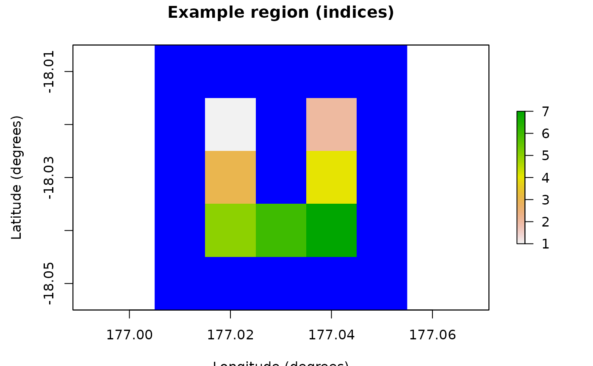

R6 class functionality for modeling dispersals within a
spatially-explicit population model. The model calculates dispersal rates between
population model cells using a distance-based function: p*exp(-distance/b)
for distance <= r (otherwise zero), where p (proportion), b
(breadth or average distance) and r (range or maximum distance) are
configurable model attributes. The dispersal rates are adjusted to limit
emigration from each cell to p. The model also generates data for
constructing compacted dispersal matrices. It dynamically generates attributes
defined as outputs (default: dispersal_data) given sampled
inputs (default: dispersal_proportion and
dispersal_max_distance). An optional DispersalFriction object
may be utilized to modify (equivalent) distances given a (spatio-temporal) frictional
landscape. When this landscape includes temporal changes, the generated
dispersal_data will be a temporal list of changing dispersal rates.
Super classes
poems::GenericClass -> poems::GenericModel -> poems::SpatialModel -> poems::Generator -> DispersalGenerator
Active bindings
model_attributesA vector of model attribute names.
regionA
Region(or inherited class) object specifying the study region.coordinatesData frame (or matrix) of X-Y population (WGS84) coordinates in longitude (degrees West) and latitude (degrees North) (get and set), or distance-based coordinates dynamically returned by region raster (get only).
descriptionA brief description of what the generator generates.
inputsAn array of input attribute names for the generator.
outputsAn array of output attribute names for the generator.
file_templatesA nested list of file template attributes.
function_templatesA nested list of function template attributes.
distribution_templatesA list of distribution template attributes.
uses_correlationsA boolean to indicate that a
SpatialCorrelation(or inherited class) object is used for generating correlated random deviates.spatial_correlationA
SpatialCorrelation(or inherited class) object for generating correlated random deviates.temporal_correlationAbsolute correlation coefficient between simulation time steps for all grid cells (0-1; default = 1).
time_stepsNumber of simulation time steps.
decimalsNumber of decimal places applied to generated data outputs (default: NULL = no rounding).
occupancy_maskOptional binary mask array (matrix), data frame, or raster (stack) for generated (time-series) data outputs.
template_attachedA list of template-nested dynamically attached model attributes that are maintained via shallow or new cloning.
dispersal_frictionA
DispersalFriction(or inherited class) object for dispersal distance multiplier data.distance_classesVector of distance interval boundaries for calculating discrete dispersal rates.
max_distance_classesThe maximum number of distance classes when they are calculated automatically via the maximum distance (default: 1000).
distance_scaleScale of distance values in meters (default = 1). Usage: set to 1 for values in meters, or to 1000 for values in kilometers.
distance_dataData frame of distance classes including indices for the construction of compact matrices (columns: target_pop, source_pop, compact_row, distance_class).
dispersal_function_dataData frame of discrete dispersal function values. Optional first column may provide distance intervals (non-inclusive lower bounds).
dispersal_proportionDispersal function: p*exp(-distance/b) p parameter. Represents the proportion and limit of dispersers between model cells.
dispersal_breadthDispersal function: p*exp(-distance/b) b parameter. Represents the breadth of the dispersal between model cells. Typically estimated via average migration distance.
dispersal_max_distanceDispersal maximum distance or range (r) parameter limits the use of the dispersal function: p*exp(-distance/b). The function is utilized when distance <= r otherwise the dispersal rate is set to zero.
dispersal_indexSampled index for the dispersal function data frame (to look-up dispersal function parameters).
dispersal_matrixDispersal matrix calculated via dispersal function.
dispersal_dataData frame of non-zero dispersal rates including indices for the construction of compact matrices (columns: target_pop, source_pop, emigrant_row, immigrant_row, dispersal_rate).
attribute_aliasesA list of alternative alias names for model attributes (form:
alias = "attribute") to be used with the set and get attributes methods.generative_templateA nested
DispersalTemplate(or inherited class) object for model attributes that are maintained via shallow or new cloning.generative_requirementsA list of attribute names and the template setting ("file", "function", or "default") that is required to generate their values.
error_messagesA vector of error messages encountered when setting model attributes.
warning_messagesA vector of warning messages encountered when setting model attributes.
Methods
Inherited methods
poems::GenericModel$get_attribute()poems::GenericModel$get_attribute_aliases()poems::GenericModel$get_attribute_names()poems::GenericModel$set_attributes()poems::Generator$add_distribution_template()poems::Generator$add_file_template()poems::Generator$add_function_template()poems::Generator$add_generative_requirements()poems::Generator$generate()poems::Generator$get_attributes()poems::Generator$new_clone()poems::Generator$read_file()poems::Generator$run_function()poems::Generator$sample_distribution()
Method new()
Initialization method sets the generative template and requirements, optionally the dispersal friction object, as well as any attributes passed via a params list or individually.
Usage
DispersalGenerator$new(
generative_template = NULL,
generative_requirements = NULL,
dispersal_friction = NULL,
attribute_aliases = NULL,
...
)Arguments
generative_templateOptional nested object for generative attributes that need to be maintained when a new clone object is generated for a sample simulation (usually a ).
generative_requirementsOptional list of attribute names and the template setting ("file" or "function") that is required to generate their values (otherwise default functionality is used).
dispersal_frictionOptional
DispersalFriction(or inherited class) object for dispersal distance multiplier data.attribute_aliasesOptional list of extra alias names for model attributes (form:
alias = "attribute") to be used with the set and get attributes methods....Parameters passed via a params list or individually.
Method generative_requirements_satisfied()
Returns a boolean to indicate that all the default, file and/or function template settings that are required for attribute generation are present.
Method set_distance_classes()
Sets the distance classes to a sequence of values from minimum to maximum in steps of interval size.
Method calculate_distance_matrix()
Returns a matrix with the calculated distance (in meters by default) between each pair of region cells.
Method calculate_distance_data()
Calculates the distance class for within-range populations using the set/provided distance classes. Also calculates indices for constructing compact matrices.
Method calculate_dispersals()
Calculates, using the conditional dispersal limiting function for a simulation sample, a dispersal matrix, or a list of data frames of non-zero dispersal rates and indices for constructing a compact dispersal matrix (default), and optional changing rates over time (via DispersalFriction object).
Examples
# U Island example region
coordinates <- data.frame(
x = rep(seq(177.01, 177.05, 0.01), 5),
y = rep(seq(-18.01, -18.05, -0.01), each = 5)
)
template_raster <- Region$new(coordinates = coordinates)$region_raster # full extent
template_raster[][-c(7, 9, 12, 14, 17:19)] <- NA # make U Island
region <- Region$new(template_raster = template_raster)
raster::plot(region$region_raster,
main = "Example region (indices)",
xlab = "Longitude (degrees)", ylab = "Latitude (degrees)",
colNA = "blue"
)

# Distance-based dispersal generator
dispersal_gen <- DispersalGenerator$new(
region = region,
dispersal_max_distance = 3000, # in m
inputs = c("dispersal_p", "dispersal_b"),
decimals = 5
)
dispersal_gen$calculate_distance_data() # pre-calculate
dispersal_gen$generate(input_values = list(
dispersal_p = 0.5,
dispersal_b = 700
))
#> $dispersal_data
#> $dispersal_data[[1]]
#> target_pop source_pop emigrant_row immigrant_row dispersal_rate
#> 1 2 1 1 1 0.02426
#> 2 3 1 2 1 0.10196
#> 3 4 1 3 1 0.01643
#> 4 5 1 4 1 0.02079
#> 5 6 1 5 1 0.01476
#> 6 1 2 1 1 0.02426
#> 7 3 2 2 2 0.01643
#> 8 4 2 3 2 0.10196
#> 9 6 2 4 2 0.01476
#> 10 7 2 5 1 0.02079
#> 11 1 3 1 2 0.10196
#> 12 2 3 2 2 0.01643
#> 13 4 3 3 3 0.02426
#> 14 5 3 4 2 0.10196
#> 15 6 3 5 3 0.05572
#> 16 7 3 6 2 0.01643
#> 17 1 4 1 3 0.01643
#> 18 2 4 2 3 0.10196
#> 19 3 4 3 3 0.02426
#> 20 5 4 4 3 0.01643
#> 21 6 4 5 4 0.05572
#> 22 7 4 6 3 0.10196
#> 23 1 5 1 4 0.02079
#> 24 3 5 2 4 0.10196
#> 25 4 5 3 4 0.01643
#> 26 6 5 4 5 0.11014
#> 27 7 5 5 4 0.02426
#> 28 1 6 1 5 0.01476
#> 29 2 6 2 4 0.01476
#> 30 3 6 3 5 0.05572
#> 31 4 6 4 5 0.05572
#> 32 5 6 5 4 0.11014
#> 33 7 6 6 5 0.11014
#> 34 2 7 1 5 0.02079
#> 35 3 7 2 6 0.01643
#> 36 4 7 3 6 0.10196
#> 37 5 7 4 5 0.02426
#> 38 6 7 5 6 0.11014
#>
#>